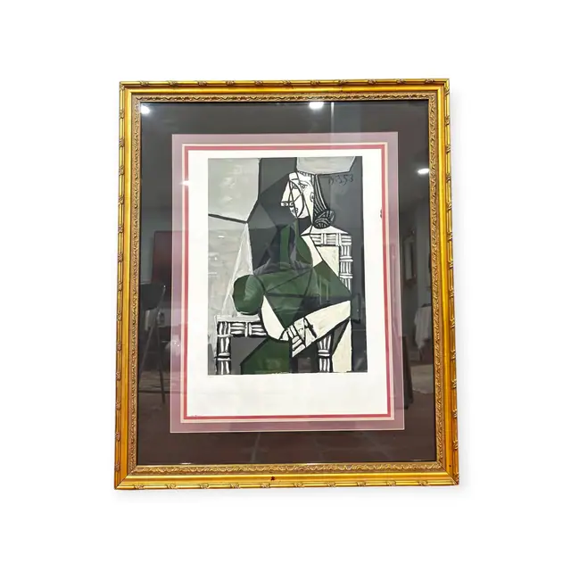
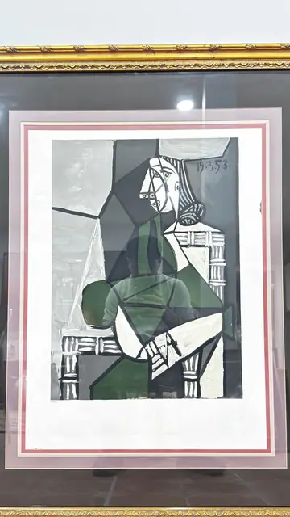
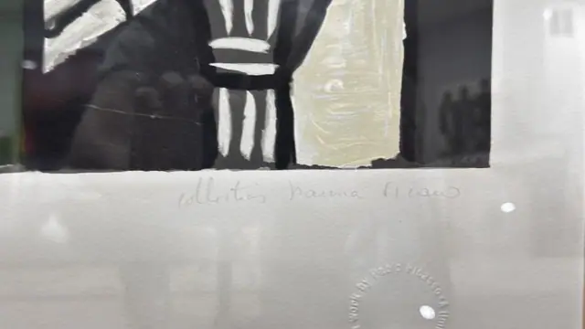
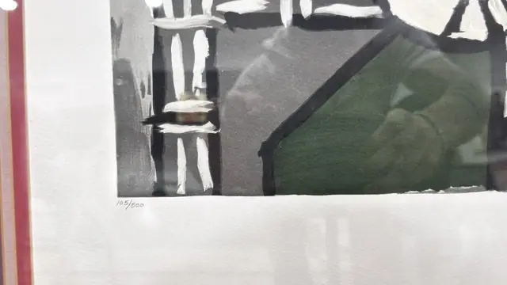
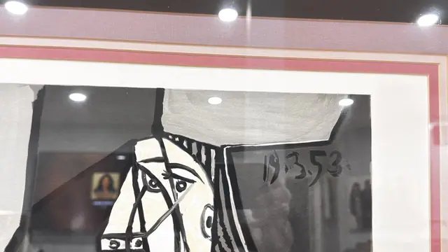

Paintings & Prints
Cubist Seated Woman After Picasso, Marina Collection, Numbered Edition, Framed, 1953
· late 20th century edition after a 1953 composition
Price Upon Request





About the Item
A seated woman is broken into flat angular planes - a white lattice-patterned chair back and skirt, a deep green bodice, grey and black shadow shapes - with her head turned in profile-and-frontal at once, a single staring eye and long black hair. The design is drawn with thick brushy black outlines and washed grey and olive fills, dated in the plate at the upper right '19.3.53.'. Printed on heavy white deckle-edged paper with a wide margin, an embossed blindstamp and a pencil inscription below. Medium: colour lithograph on deckle-edged paper (limited edition after a Picasso work). Edition: 105/500. Inscribed on the reverse or mount: collection Marina Picasso; 105/500; 19.3.53.; ...work by Pablo Picasso A lim... (circular embossed blindstamp, partly legible). Condition: Sheet clean and bright with an intact deckle; mat and frame in good order. Heavy reflections in every photograph.
Details
- Creation Year:
- late 20th century edition after a 1953 composition
- Dimensions:
- Height: 42.25 in (107.31 cm)
Width: 33.0 in (83.82 cm)
outside of frame - Medium:
- colour lithograph on deckle-edged paper (limited edition after a Picasso work)
- Edition:
- 105/500
- Period:
- 20Th
- Condition:
- Offered in the condition shown in the photographs.
- Reference Number:
- VO-254
- Documentation:
- no paper certificate photographed; authentication is the embossed blindstamp on the sheet
- Gallery Location:
- collection Marina Picasso; 105/500; 19.3.53.